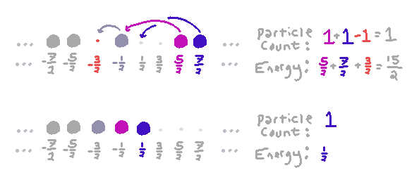
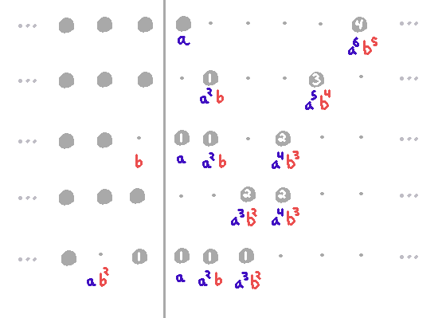

Jacobi Triple Product Identity
I really liked this
exposition of a combinatorial — and very physics-flavored — proof of the Jacobi Triple
Product Identity, so I thought I'd try to tell the story in my own
words, with some more pictures.
The Dirac Sea
We start by imagining that we have an infinite collection of particles, but with the following
constraints:
- The particles are indistinguishable except for how much energy each one currently has.
- No two particles can exist at the same state, i.e. with the same energy.
- The only energy value a particle is allowed to have is an integer plus 1/2.
For example, energies $-7/2, -5/2, -3/2, -1/2, 1/2, 3/2, 5/2, 7/2$ are allowed.
Given these constraints, the state of our whole universe is given by answering the question,
for each energy value $E \in \Z + {1\over 2}$, does there exist a particle of energy $E$?
We add one more constraint:
- The state of the whole collection of particles is only finitely different
from the ground state, which we define to be this picture:
That is, the ground state is one where we do have a particle at every negative
energy, and we don't have a particle at every positive energy.
We say that the total energy of the ground state is
zero, and the total particle count is zero. Obviously
based on what we just said, it seems like we have infinitely
many particles, with infinitely negative energy — but we
take the ground state as a baseline for both statistics.
We may consider states with more particles at positive energies:
For example, we say that this state has two particles (because it
has two more than the ground state) and it has energy
${1\over 2} + {3 \over 2} = 2$.
We may also consider states with fewer particles at negative energies:
We say that this state has $-2$ particles (because it
has two fewer than the ground state) and it has energy
${1\over 2} + {5 \over 2} = 3$. It has positive energy because we've removed
particles that had negative energy.
We may also add and remove particles, as long as we only add and remove finitely many:
We say that this state has particle count zero (because it
has just as many as the ground state — one particle and one 'hole'/'antiparticle')
and it has energy
${7\over 2} + {3 \over 2} = 5$.
First Generating Function
Now we want to try writing a generating function for the set of all allowable
states, indexed by their particle count and energy. Recall that a state is
a way of answering the question,
For every energy value $E \in \Z + {1\over 2}$, does there exist a particle of energy $E$?
We can interpret the For every as a product, and the two possibilities —
that either there does or does not exist a particle of energy $E$ — as a sum.
Specifically, we might try to consider the product
\[\prod_{E \in \Z + {1\over 2}} (1 + q^E z)\]
which gives us a polynomial in $q$ and $z$, where we might try to interpret the coefficient
of $q^E z^n$ as being the number of states with energy $E$ and particle count $n$.
The problem with this expression is it effectively asserts that
our ground state is having no particles at all: it allows for states with negative energies,
whereas our examples above, with the ground state including occupants for all negative energy levels, all state energies are positive.
Therefore we do the following not-quite-formal reasoning
\[\prod_{E \in \Z + {1\over 2}} (1 + q^E z) = \prod_{m \ge 0} (1 + q^{m+{1\over 2}} z)(1 + q^{-m-{1\over 2}} z)\]
\[ = \left(\prod_{m \ge 0} (1 + q^{m+{1\over 2}} z)\right)\left(\prod_{m\ge 0}(1 + q^{-m-{1\over 2}} z)\right)\]
\[ = \left(\prod_{m \ge 0} (1 + q^{m+{1\over 2}} z)\right)\left(\prod_{m\ge 0}( q^{m+{1\over 2}} z^{-1} + 1)q^{-m-{1\over 2}} z\right)\]
\[ = \left(\prod_{m \ge 0} (1 + q^{m+{1\over 2}} z)\right)\left(\prod_{m\ge 0}( q^{m+{1\over 2}} z^{-1} + 1)\right) \left(\prod_{m \ge 0} q^{-m-{1\over 2}} z\right)\]
and renormalize by dropping the factor of $\left(\prod_{m \ge 0} q^{-m-{1\over 2}} z\right)$ (in other words: taking for granted that we do have infinitely many negative-energy particles) to obtain
\[\left(\prod_{m \ge 0} (1 + q^{m + {1\over 2}} z)\right)\left(\prod_{m \ge 0} (1 + q^{m + {1\over 2}} z^{-1})\right)\]
The coefficient of $q^E z^n$ in this infinite product is in fact the number of states finitely different from our chosen ground state with energy $E$ and particle count $n$.
For each positive energy $m + {1\over 2}$, we can choose either to have a particle there (contributing $q^{m+{1\over 2}} z$ to the product, increasing total energy by $m+{1\over 2}$ and increasing particle
count by 1) or not (trivially contributing 1 to the product).
For each negative energy level, we can choose either to leave our ground state particle alone (trivially contributing 1), or to remove a particle of that energy, i.e.
add an antiparticle at that energy, contributing $q^{m+{1\over 2}}z^{-1}$, increasing energy by $m+{1\over 2}$, and decreasing particle count by 1.
Second Generating Function
Another way we can account for
how many states there are at each energy is by observing that for
a chosen particle count (relative to the ground state), there is a
minimum energy (relative to the ground state) that can be
obtained: we just push all particles leftward until we can push them
no farther. Consider the following example:

The particle that had energy $-{1\over 2}$ drops 1 spot to fill the $-{3\over 2}$ level.
The particle that had energy ${5\over 2}$ drops 3 spots to fill the $-{1\over 2}$ level.
The particle that had energy ${7\over 2}$ drops 3 spots to fill the ${1\over 2}$ level.
This process effectively "standardizes" any state by mapping it to
a state that looks just like the ground state, but perhaps shifted
left or right on the energy scale. The information that is lost by
this standardization process is exactly a partition of the
number that counts how much total energy was lost. In this case, we lost a total of 7 units of energy, and the partition is $(3,3,1)$.
What is the energy and particle count of the ground state shifted to the right $N$ spots?
Since the sum of the first $N$ odd numbers is $N^2$, we see its energy is $N^2/2$,
and the particle count is $N$. So in generating-function language, the "almost ground" states form the sum
\[\sum_{N = -\infty}^\infty q^{N^2/2}z^N \]
But we also have to consider the choice of partition with which we 'excite' particles from one of these states. Let $p(n)$ be the number of partitions of $n$. We
now claim that an expression for the generating function of all possible states is:
\[\sum_{n=0}^\infty p(n)q^n \sum_{N = -\infty}^\infty q^{N^2/2}z^N \]
We first choose how much energy (i.e. $n$) is tied up in exciting particles above the almost-ground state. Then we choose a partition to describe how it is allocated,
and choose which almost-ground state we're working from.
Putting These Together
We have two generating-function expressions that both purport to describe all possible states of our system. We set them equal:
\[\left(\prod_{m \ge 0} (1 + q^{m + {1\over 2}} z)\right)\left(\prod_{m \ge 0} (1 + q^{m + {1\over 2}} z^{-1})\right)= \sum_{n=0}^\infty p(n)q^n \sum_{N = -\infty}^\infty q^{N^2/2}z^N \]
Recall the product expression of the partition generating function:
\[\left(\prod_{m \ge 0} (1 + q^{m + {1\over 2}} z)\right)\left(\prod_{m \ge 0} (1 + q^{m + {1\over 2}} z^{-1})\right)= \left(1\over \prod_{m=1}^\infty (1-q^m)\right) \sum_{N = -\infty}^\infty q^{N^2/2}z^N \]
And recall the standard $q$-Pochhammer notation:
\[(a;q)_\infty = \prod_{m = 0}^\infty (1-aq^m)\]
This lets us rewrite the above as
\[(-q^{1\over 2}z;q)_\infty (-q^{1\over 2}z^{-1};q)_\infty = {1\over (q;q)_\infty} \sum_{N = -\infty}^\infty q^{N^2/2}z^N \]
Finally, substituting $q = ab$ and $z = \sqrt{a/b}$, we can obtain the pleasantly symmetric form
\[(-a;ab)_\infty (-b;ab)_\infty (ab;ab)_\infty = \sum_{N = -\infty}^\infty a^{N(N+1)/2}b^{N(N-1)/2} \]
A Direct Combinatorial Interpretation of the $ab$-expression
Say a unique off-diagonal partition of the pair $(\ell, k)$ is a finite set of pairs $(\ell_i, k_i)$ such that $\ell = \sum_i\ell_i$ and $k = \sum_i k_i$
and $|\ell_i - k_i| = 1$. Then the $a^\ell b^k$ coefficient of
\[(-a;ab)_\infty (-b;ab)_\infty = \prod_{m=0}^\infty (1+a^{m+1}b^m)(1+a^mb^{m+1})\] is exactly the number of unique off-diagonal partitions
of $(\ell, k)$.
Consider what the equation
\[(-a;ab)_\infty (-b;ab)_\infty (ab;ab)_\infty = \sum_{N = -\infty}^\infty a^{N(N+1)/2}b^{N(N-1)/2} \]
is effectively saying, if we move the $(ab;ab)_\infty$ back to the right hand side:
\[\prod_{m=0}^\infty (1+a^{m+1}b^m)(1+a^mb^{m+1}) = \left(\sum_{n = 0}^\infty p(n)a^nb^n\right) \left(\sum_{N = -\infty}^\infty a^{N(N+1)/2}b^{N(N-1)/2}\right) \]
We should be able to bijectively transform a unique off-diagonal partition of $(\ell, k)$ into a choice of $n$, an ordinary partition $\lambda$ of $n$, and a choice of $N$,
such that
\[n + N(N+1)/2 = \ell\]
\[n + N(N-1)/2 = k\]
Here is how we can do it. The parts of a unique off-diagonal partition are particles and anti-particles.
Specifically, $a^{m+1}b^{m}$ plays the role of a particle of energy $m+1/2$, and $a^{m}b^{m+1}$ plays the role of an antiparticle of energy $m+1/2$.
We set
\[n = {\ell + k - (\ell - k)^2 \over 2}\]
\[N = \ell - k \]
And extracting the partition works analogously: we can see that a $a^mb^{m+1}$ actually does behave like a 'missing' $a^{m+1}b^m$, as long as we have
a big enough $a^{N(N+1)/2}b^{N(N-1)/2}$ 'sea' to borrow from.
